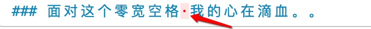
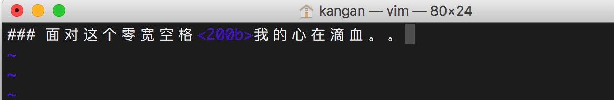

零宽空格 (Zero Width Space) 就如同他的名字一样，他是一个没有宽度的空格.
一般的空格虽然说是看不见，但是可以被选中，也空出来一个格子，但是零宽空格既看不见，也不占格子，更不能选中了。
比如说 AB 中 A和 B 之间其实有一个没有宽度的空格。看上去 A 和 B是连续的，其实他们中间隔着一个空格呢！
我是如何被这个货坑的呢？
第一次被坑
初次和他交手大概可能是前几年把网页上的代码直接粘在 `Xcode
中，代码明明是没有问题的，但是一直报错：
Non-ASCII characters are not allowed outside of literals and identifiers
自己把代码审查了一遍又一遍，就是没有发现问题，强退重启大法也无用，不得以问了一下老司机是什么情况，老司机很淡定的把代码全删了原样重写了一遍没事了。
当时直接崩溃了，向老司机请教是何原因，老司机不语（我估摸着他也不知道这是问啥）。
第二次被坑
虽然说一个优秀的程序员不应该总是粘代码，但是人总有犯懒的时候，而常在河边走哪有不湿鞋的呢，终于有出现了那个上面那个莫名其妙的报错，这次我怒了，一个字一个字的审查，还是没发现问题，内心躁动不已，疯狂的按键盘的方向键让光标在报警的那一行来回游走，突然发现了一个诡异的事情，在一个字母 A (假设) 后面每次需要点两次右方向键光标才能跳到下一个字母 B，一开始我还以为是电脑卡了，我就想再试试刚刚的情况看还卡不卡，就像让光标回到 A 前面，居然又是点了两次左方向键才让光标从 B 的前面走到了 A 前面，靠，是电脑疯了还是我疯了，然后我继续实验。在循环了N次以后终于发现 A和 B 之间好像是存在这什么东西，我就在从 B 到 A 的开始阶段先按了一下 Delete 键，果然毫无动静，结果按了一下左，光标到了 A 的左边！然后那个诡异的报错也消失了！ A B 之间也畅通无阻了！大魔王被 delete 了！太阳出来了！世界和平了！
没错，当时在A B 之间的大魔王 就是零宽空格！
第三次被坑以及后面的很多次
经过前两次的教训，之后就很少从网页粘代码了，再遇到这样的问题，也能很淡定的解决他了。
但是它还是没打算放过我，在我认为这个小小玩具已经不能够对我产生威胁的时候，他就在不经意之间给了我一个大大的耳光。
当时是用 Markdown 写完文章后，转成静态博客的之后，文章的索引和搜索（hexo的搜索插件）都出了问题，索引是不能正确的显示每行的标题层级，而搜索就直接任何搜索都无结果，在github上问了一下写博客主题的人才知道搜索无结果是因为没有正确建立搜索的索引。。具体原因不明。。 再一次，陷入绝望之中。。
继续抽丝剥茧吧，开始我怀疑是可能是我的 Markdown 语法写错了，而高大上的 编辑器 atom 自动兼容的了我语法，我就把整篇文章复制在了 Mac 上的一个 Markdown 软件 Quiver 上，突然发现文章中出现了好多红点点！！！

妈蛋，这是什么玩意！！果断删掉，再生成静态博客，问题都没了！太阳出来了！世界和平了！
身为一个强迫症，怎么能容忍这种事情就这么不明不白的过去了呢？我就怀疑这是不是和前两次坑我的那个大魔王是一回事。
然后我又打开 atom 中那篇还没删除红点点的有问题文章，找到在 Quiver 中红点点的位置，尼玛什么都没有，什么都看不见！！用键盘在那里移动光标验证一下，果然是和前两次情况一样，像是中间有一个看不见没有宽度的空格。 delete这些大魔王们后把这篇也生成博客，果然没问题了。。
原来折磨我的，一直是你。。（心好累）
在网上一顿搜索后（耗时轮小时计）才知道这叫零宽空格。而且被坑的人还不在少数哈哈。。
这货在高级编辑器里是隐身的。。目前我知道的是在 Quiver 和 vim 就会显性，在 Quiver 的样子入上图所示，在 vim 中就更好辨认了，如图：

<200b>，你真是2B的一百倍2B中的战斗机啊！
被坑了这么多次，还是因为自己喜欢乱粘代码的坏习惯，以后能不粘还是不粘了。。
这货用好了也是一利器
在知乎上看到一篇文章。
上就说了零宽空格的用处，能看出有两点作用，在 iOS 版本的 QQ 上，手机QQ 为了解析表情的方便，使用了零宽空格（U+200B）作为分隔符，也可以用作 iPhone 应用文件夹的文件名，从而让人看上去是没有文件名的，还可以写在名字开头，这样排序就靠前了。
总结
记下这篇文章，我希望在其他地方再次被零宽空格坑的时候，能够想到是零宽空格做的孽，现在给自己添加了一个思想烙印，遇到奇怪编码的问题，先复制在 vim 中看看。。